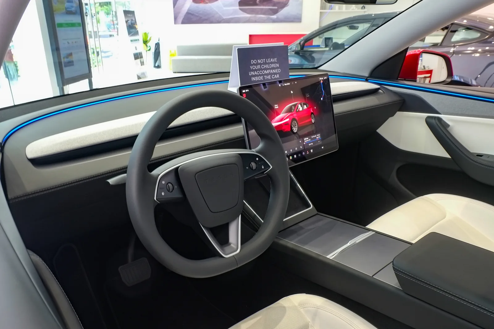

▲ FSD는 스티어링과 화면을 통해 계속 운전자의 개입을 요구하도록 설계돼 있다(사진은 국내 전시 차량)
9월 19일(현지시간) 미국 캘리포니아 솔라노 카운티의 한 고속도로. 시속 60마일(약 97㎞)로 달리던 테슬라 한 대가 순찰 중이던 오토바이 경찰관의 눈에 들어왔다. 운전석에는 검은 선글라스를 쓴 남성이 축 늘어진 채 잠들어 있었다. 캘리포니아주 고속도로순찰대(CHP)가 다가가 차를 세웠을 때, 이 차량은 테슬라의 '완전자율주행(FSD)' 기능이 켜진 상태였다.
1. 무슨 일이 있었나 — CHP가 남긴 한 문장
▲ FSD는 운전대와 화면을 통해 지속적으로 운전자의 개입을 요구하도록 설계돼 있다(사진은 국내 전시 차량, 사건 차량 아님) ⓒ CarPrism
CHP 소속 오토바이 경찰관은 고속도로를 순찰하던 중 이상한 낌새를 느끼고 테슬라 차량 옆으로 접근해 운전자 상태를 확인했다. 운전자는 반응이 없었다. 경찰관은 곧바로 차를 세웠고, 운전자에게는 과속을 이유로 교통법규 위반 딱지가 발부됐다. 잠들어 있었다는 사실 자체보다, 그 상태로 법정 속도 이상을 유지하고 있었다는 점이 단속의 표면적 근거가 된 셈이다.
CHP는 당시 상황을 촬영한 영상을 SNS에 공개하며 이렇게 남겼다.
📍 CHP의 공식 코멘트
"운전자가 잠든 상태에서 안전한 속도는 얼마일까. 시속 0마일이다." CHP는 이어 FSD 같은 기능이 '자율주행'이 아니라 레벨2 운전자 보조 시스템이며, 법적으로 운전을 보조할 뿐 운전자를 대신하지 않는다고 못박았다. "낮잠을 자려면 운전석이 아니라 주차된 장소에서 자라"는 것이 CHP의 당부였다.
2. 이번이 처음이 아니다 — 확인된 영상만 43건
이 사건이 유독 눈길을 끄는 이유는 이미 반복되고 있는 패턴이기 때문이다. 미국 NBC뉴스 조사에 따르면, 움직이는 테슬라 안에서 운전자가 잠든 것으로 보이는 영상은 이번까지 최소 43건이 확인됐고, 이 중 17건은 올해(2026년)에만 올라온 것이다. 캐나다에서도 브리티시컬럼비아주를 중심으로 유사 사례가 이어졌다. 3월 코퀴틀럼 1번 고속도로에서 모델Y 운전자가, 7월에는 웨스트켈로나에서 FSD 작동 중 서류를 읽던 운전자가 각각 단속됐고, 같은 달 골든과 레벨스토크 구간에서도 잠든 운전자의 영상이 포착됐다.
✅ 미국 의회까지 움직였다
일리노이주 하원의원 라자 크리슈나무르티는 이 문제를 근거로 미 교통부 장관에게 서한을 보내 NHTSA(도로교통안전국)의 대응을 공식 촉구했다. NHTSA는 현재 FSD를 탑재한 약 320만 대의 테슬라 차량을 대상으로, 시야가 저하된 상황에서 시스템이 이를 감지해 운전자에게 충분한 경고 시간을 주는지를 살피는 조사를 진행 중이다. 이 조사에는 사망 1건, 부상 1건을 포함한 9건의 사고가 포함돼 있다.
3. 왜 시스템이 못 막았나 — 감지와 회피 사이의 간극
테슬라 FSD는 졸음이 감지되면 화면에 "졸음이 감지됐습니다. FSD와 함께 집중을 유지하세요"라는 경고를 띄우도록 설계돼 있다. 문제는 이 감지 기능이 절대적이지 않다는 점이다. 외신 보도에 따르면 일부 운전자들 사이에서 캐빈 카메라의 시야를 가리거나 눈동자 추적을 피하려는 시도가 보고되고 있는데, 이는 시스템의 허점을 이용한 명백한 안전 위반 행위로 지적받고 있다. CHP나 NHTSA 모두 이런 시도가 법적 책임을 회피시켜주지 않으며, 오히려 사고 시 과실을 키우는 요인이 될 수 있다고 경고한다.
📍 테슬라 공식 입장
테슬라 역시 FSD를 완전한 자율주행 시스템으로 규정하지 않는다. 회사는 FSD 사용 중에도 운전자가 항상 도로 상황에 주의를 기울이고, 필요할 경우 즉시 차량을 통제할 준비가 돼 있어야 한다고 공식적으로 안내하고 있다.
4. 한국에서 이런 일이 벌어진다면 — 도로교통법이 말하는 것

▲ 국내 경찰 순찰차(참고사진). 이번 사건은 미국 캘리포니아에서 발생했으나, 국내에도 유사 상황을 규율하는 조항이 있다 ⓒ Wikimedia Commons
이 사건은 미국에서 벌어졌지만, 국내 도로교통법에도 이런 상황을 정면으로 겨냥한 조항이 있다. 도로교통법 제50조의2(자율주행자동차 운전자의 준수사항 등)는 완전자율주행시스템에 해당하지 않는 자율주행시스템을 갖춘 차량의 운전자는, 시스템이 직접 운전을 요구하면 지체 없이 조향장치·제동장치 등을 직접 조작해 운전해야 한다고 규정한다. FSD처럼 레벨2~3 수준의 보조 시스템을 쓰다 사고가 나면, 도로교통법 제56조의2에 따라 중과실이나 가중 양형요소로 평가될 수 있다.
✅ 국토교통부도 움직이고 있다
국토교통부는 2026년 4월 '자율주행차 사고책임 태스크포스(TF)'를 구성했다. 연말까지 사고 유형별 책임 판단 기준과 보험 처리 프로세스를 표준화한 가이드라인을 마련하겠다는 목표다. 아직 레벨2~3 보조주행 중 발생하는 사고의 책임 소재가 완전히 정리되지 않은 상태에서, 이번 미국 사례처럼 '시스템을 믿고 잠들었다'는 항변이 국내 법정에서 어떻게 판단될지는 이 TF의 결론에 따라 구체화될 전망이다.
5. 레벨2도 다 같은 레벨2가 아니다 — 슈퍼크루즈·드라이브파일럿과 무엇이 다른가
이번 사건이 특히 논란이 된 것은 FSD의 이름 자체가 '완전자율주행(Full Self-Driving)'이라는 점과 무관하지 않다. 명칭과 달리 SAE 기준으로는 여전히 레벨2에 머물러 있는데, 같은 레벨2·3 시장 안에서도 경쟁사들의 접근 방식은 사뭇 다르다.

▲ GM의 슈퍼크루즈는 라이다로 정밀 지도화된 고속도로에서만 작동하되, 대신 완전한 손 놓기를 허용한다(사진은 슈퍼크루즈 탑재 차종 중 하나인 캐딜락) ⓒ Wikimedia Commons
| 시스템 | SAE 등급 | 작동 조건 | 운전자 모니터링 방식 |
|---|---|---|---|
| 테슬라 FSD | 레벨2 | 사실상 전 도로(고속도로·도심·교차로 포함), 별도 정밀지도 불필요 | 캐빈 카메라 시선 추적 + 스티어링 토크 감지 |
| GM 슈퍼크루즈 | 레벨2(핸즈프리) | 라이다로 정밀 지도화된 검증된 고속도로 구간에 한정 | 적외선 아이트래킹 카메라, 이탈 시 즉시 경고·감속 |
| 메르세데스 드라이브파일럿 | 레벨3 | 독일 고속도로 일부 구간, 저속 정체 상황 등 지오펜싱된 조건 | 레벨3 조건 충족 시 전방 주시 의무 자체가 일부 해제(단, 국내 미도입) |

▲ 세계 최초 레벨3 인증을 받은 메르세데스 드라이브파일럿은 S클래스 등에 탑재되지만, 작동 구간이 독일 고속도로 일부로 엄격히 제한된다 ⓒ Wikimedia Commons
테슬라 FSD는 범용성이 강점이다. 정밀지도 없이 카메라 영상만으로 고속도로부터 골목길까지 대응한다. 반면 GM 슈퍼크루즈는 검증된 구간에서의 완전한 핸즈프리를 내세우는 대신 작동 범위를 크게 좁혔고, 아이트래킹 이탈에 훨씬 민감하게 반응하도록 설계돼 있다. 메르세데스 드라이브파일럿은 아예 법적으로 인증된 레벨3여서, 조건이 맞으면 운전자가 다른 행동(영상 시청 등)을 하는 것이 합법이다 — 다만 그 조건 자체가 매우 좁고, 한국에는 아직 들어오지 않았다.
📍 결국 '이름'이 아니라 '등급'을 봐야 한다
FSD든 오토파일럿이든, 국내외를 막론하고 레벨2·3 시스템의 명칭은 실제 법적 자율주행 등급과 다를 수 있다. 판매·마케팅 명칭에 '자율주행'이 들어간다고 해서 운전자의 법적 책임이 사라지는 것은 아니라는 점을, 이번 사건과 국내 도로교통법 조항 모두가 공통적으로 가리키고 있다.
요약
9월 19일 미국 캘리포니아에서 테슬라 FSD를 켠 채 시속 97km로 달리다 잠든 운전자가 CHP에 적발됐다. CHP는 과속 딱지를 발부하며 "운전자가 잠든 상태에서 안전한 속도는 시속 0마일"이라고 경고했다. 이 사건은 고립된 해프닝이 아니다. NBC뉴스가 확인한 유사 영상만 43건이며, 미 하원의원이 NHTSA에 대응을 공식 촉구할 만큼 반복되는 문제로 굳어지고 있다.
FSD는 명칭과 무관하게 SAE 기준 레벨2다. 법적 운전 책임은 여전히 운전자에게 있고, 국내 도로교통법 역시 유사 상황을 중과실·가중 양형요소로 평가할 수 있도록 규정하고 있다. GM 슈퍼크루즈나 메르세데스 드라이브파일럿처럼 작동 범위를 좁히는 대신 모니터링을 강화하는 방식과 비교하면, FSD의 범용성과 안전장치 사이의 간극이 이번 논란의 핵심이라 할 수 있다.
운전 보조 시스템은 이름이 무엇이든 보조 시스템일 뿐이다. 운전대에서 손을 떼도 되는 순간과, 눈을 감아도 되는 순간은 전혀 다른 이야기라는 점을 이번 사건이 다시 한번 확인시켜준다.